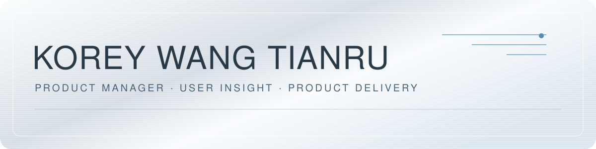

我是 Korey，王天如
AI 产品实习 · Agent 工作流 · 内容工具
仓库展示建议：Portfolio → Storage Analyzer → DOCX 排版修复 → Life Compound OS
SILVER / SIX DIRECTIONS / 2026
同一个人，六种叙事。先让 HR 看懂你的方向，再让面试官看到产品判断与实际交付。
这是一页设计比较稿。点击方案切换完整布局；项目入口连接现有作品。选定方向后再进入细节优化。
A CHOICE OF PRIORITIES
我的建议：01 做求职首页，06 做 Fitness OS 独立展示；借用 02 的字体和留白。保留银白材质，冰蓝只强调主要入口。
| 方向 | 最先回答 | 优势 | 取舍 |
|---|
GITHUB / A SECOND ENTRANCE
GitHub 用银色横幅和清晰的作品入口承接访客。完整布局留给个人网站；GitHub 原生导航与贡献图仍由平台控制。

AI 产品实习 · Agent 工作流 · 内容工具
仓库展示建议：Portfolio → Storage Analyzer → DOCX 排版修复 → Life Compound OS